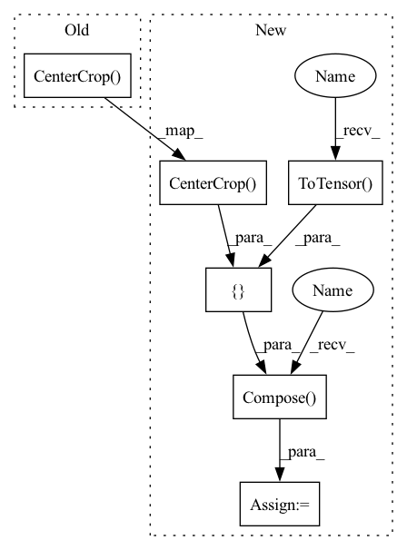

Pattern ID :24291

Before Change
])
val_tranform = transforms.Compose([
ResizeImage(resize_size),
transforms.CenterCrop(crop_size),
transforms.ToTensor(),
normalize
])
After Change
// Data loading code
normalize = transforms.Normalize(mean=[0.485, 0.456, 0.406], std=[0.229, 0.224, 0.225])
if args.center_crop:
train_transform = transforms.Compose([
ResizeImage(256),
transforms.CenterCrop(224),
transforms.RandomHorizontalFlip(),
transforms.ToTensor(),
normalize
])
else:
train_transform = transforms.Compose([
ResizeImage(256),
transforms.RandomResizedCrop(224),
In pattern: SUPERPATTERN
Frequency: 3
Non-data size: 6
Instances
Fragment ID: 75488149
Project Name: thuml/transfer-learning-library
Commit Name: 540d571d6454ca34ee2687a3fb6a2e63e27be111
Time: 2020-03-16
Author: JiangJunguang1123@outlook.com
File Name: examples/mdd.py
M Class Name: AnonimousClass
N Class Name: AnonimousClass
M Method Name: main(1)
N Method Name: main(1)
M Parent Class:
N Parent Class:
M File Name: examples/mdd.py
N File Name: examples/mdd.py
M Start Line: 42
M End Line: 96
N Start Line: 40
N End Line: 100
'>
Before Change
])
val_tranform = transforms.Compose([
ResizeImage(resize_size),
transforms.CenterCrop(crop_size),
transforms.ToTensor(),
normalize
])
After Change
// Data loading code
normalize = transforms.Normalize(mean=[0.485, 0.456, 0.406], std=[0.229, 0.224, 0.225])
if args.center_crop:
train_transform = transforms.Compose([
ResizeImage(256),
transforms.CenterCrop(224),
transforms.RandomHorizontalFlip(),
transforms.ToTensor(),
normalize
])
else:
train_transform = transforms.Compose([
ResizeImage(256),
transforms.RandomResizedCrop(224),
'>
Fragment ID: 75488147
Project Name: thuml/transfer-learning-library
Commit Name: a5d345dfccf4fe0912edb7566476bf26cf0a9ac0
Time: 2020-03-16
Author: JiangJunguang1123@outlook.com
File Name: examples/mdd.py
M Class Name: AnonimousClass
N Class Name: AnonimousClass
M Method Name: main(1)
N Method Name: main(1)
M Parent Class:
N Parent Class:
M File Name: examples/mdd.py
N File Name: examples/mdd.py
M Start Line: 42
M End Line: 96
N Start Line: 40
N End Line: 100
'>
Before Change
self.transform = T.Compose([
T.Lambda(lambda img: img.convert("RGB") if img.mode != "RGB" else img),
T.Resize(self.img_size),
T.CenterCrop(self.img_size),
T.ToTensor(),
T.Normalize(((0.5,) * 3, (0.5,) * 3)),
])
After Change
T.ToTensor(),
T.Normalize((0.5, 0.5, 0.5), (0.5, 0.5, 0.5)),
])
self.transform_val = T.Compose([
T.Lambda(lambda img: img.convert("RGB") if img.mode != "RGB" else img),
T.Resize(img_size),
T.CenterCrop(img_size),
T.ToTensor(),
T.Normalize((0.5, 0.5, 0.5), (0.5, 0.5, 0.5)),
])
def setup(self, stage=None):
if self.fake_data:
self.train_dataset = FakeData(1200000, (3, self.img_size, self.img_size), 1000, self.transform_train)
'>
Fragment ID: 75488146
Project Name: tgisaturday/dalle-lightning
Commit Name: 84728b859d4d3a7ec20af6c29427936925dcfc47
Time: 2021-07-15
Author: jamesk1228@gmail.com
File Name: pl_dalle/loader.py
M Class Name: ImageDataModule
N Class Name: ImageDataModule
M Method Name: __init__(8)
N Method Name: __init__(7)
M Parent Class: LightningDataModule
N Parent Class: LightningDataModule
M File Name: pl_dalle/loader.py
N File Name: pl_dalle/loader.py
M Start Line: 20
M End Line: 27
N Start Line: 13
N End Line: 35